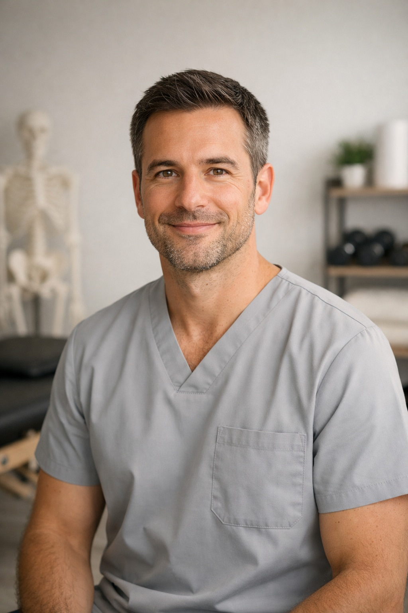

“Con oltre 20 anni di esperienza voglio ridefinire il concetto di fisioterapia sportiva attraverso un approccio personale”
Rinomato fisioterapista noto per il suo approccio innovativo nella fisioterapia sportiva e nella prevenzione degli infortuni. Con una carriera che si estende su più di due decenni, lavora con atleti di livello olimpico e professionisti dello sport, guadagnandosi una reputazione di eccellenza nel campo della riabilitazione sportiva. La sua filosofia terapeutica combina tecniche tradizionali con le più moderne tecnologie, puntando sempre alla massima funzionalità e al benessere dei suoi pazienti. Oltre alla pratica clinica, Simone è anche un ricercato relatore in convegni internazionali, dove condivide le sue conoscenze e le sue innovazioni nel trattamento fisioterapico.

Inizio del percorso formativo e approfondimento delle tecniche olistiche.
Esperienza consolidata con atleti d'elite, cliniche private e ospedali nei circuiti internazionali.
Supporto diretto ai campioni mondiali dello sport in un percorso di consapevolezza e superamento dei limiti fisici.
Università degli Studi, specializzazione in riabilitazione motoria avanzata e recupero post-operatorio.
Approfondimento sullo studio del movimento umano applicato allo sport di alto livello.
Integrazione di tecniche di medicina tradizionale cinese nel recupero funzionale dell'atleta.
Contattami oggi per fissare una prima valutazione in studio.
Scrivimi un'email